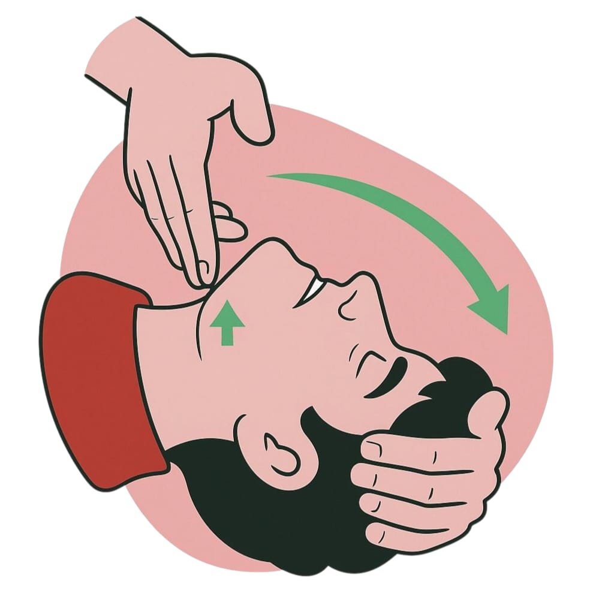
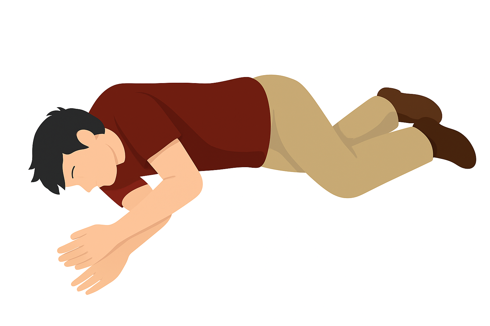
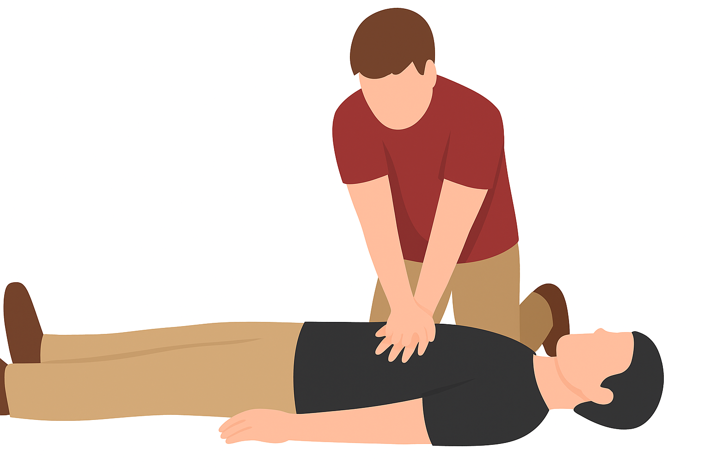

Bewusstlosigkeit bedeutet, dass eine Person nicht auf Ansprache oder Berührung reagiert. Wenn sie dabei noch normal atmet, besteht die Gefahr, dass durch Entspannung der Muskulatur die Zunge zurückfällt oder Erbrochenes die Atemwege blockiert. Daher ist schnelles Handeln wichtig, um die Atmung zu sichern und lebensgefährliche Komplikationen zu verhindern.
Bewusstsein prüfen: Die Person laut ansprechen und leicht an den Schultern rütteln. Reagiert sie nicht, weiter mit der Atemkontrolle.
Atemwege freimachen: Eine Hand auf die Stirn, die andere unter das Kinn legen. Den Kopf vorsichtig nach hinten neigen, bis der Mund sich öffnet, dabei das Kinn leicht anheben.
Atmung kontrollieren: Für maximal 10 Sekunden sehen (Brust-/Bauchbewegung), hören (Atemgeräusche) und fühlen (Luftstrom an der Wange).
Stabile Seitenlage: Wenn Atmung vorhanden ist, die Person in die stabile Seitenlage bringen. Falls das nicht möglich ist, zumindest den Kopf leicht nach hinten neigen und das Kinn anheben, um die Atemwege offen zu halten. Anschließend Notruf (112) absetzen.
❗ Trainiere die stabile Seitenlage im Übungsbereich
Reaktion prüfen: Das Baby sanft am Fuß berühren.
Atmung kontrollieren: Kopf vorsichtig in eine neutrale Position bringen – nicht überstrecken. Dann bis zu 10 Sekunden sehen, hören und fühlen.
Atmung vorhanden: Baby auf der Seite im Arm halten, Atmung weiter beobachten und Notruf wählen.
Keine oder abnorme Atmung: Sofort mit der Herz-Lungen-Wiederbelebung (HLW) beginnen.
Herzdruckmassage beginnen: Handballen auf die Mitte des Brustkorbs legen, zweiten Handballen darüber. Mit gestreckten Armen senkrecht etwa 5–6 cm tief drücken, 100–120 Mal pro Minute. Druck- und Entlastungsphasen gleich lang halten.
❗ Trainiere die Herzdruckmassage im Übungsbereich
Atemspende (optional): Nach 30 Kompressionen den Kopf überstrecken, Nase zuhalten, eigenen Mund über den der Person legen, 1 Sekunde Luft einblasen, bis sich der Brustkorb sichtbar hebt. Verhältnis: 30:2.
Herz-Lungen-Wiederbelebung (HLW) fortsetzen: Bis die Person Lebenszeichen zeigt, professionelle Hilfe eintrifft oder ein automatisierter externer Defibrillator (AED) verfügbar ist.
Atemspenden: 2 bis 5 erste Atemspenden durch Mund und Nase, jeweils 1 Sekunde lang, bis sich Brustkorb oder Bauch hebt.
Herzdruckmassage: Mit zwei Fingern oder mit der Daumentechnik (Brustkorb mit beiden Händen umfassen und mit den Daumen drücken) etwa 4 cm tief, 100–120 Mal pro Minute. Verhältnis 30:2 beibehalten.
Atemspenden: 2 bis 5 Atemspenden durch Mund (ggf. auch Nase), jeweils 1 Sekunde lang.
Herzdruckmassage: Mit einer oder zwei Händen mindestens 5 cm tief in die Mitte des Brustkorbs drücken, 100–120 Mal pro Minute. Verhältnis 30:2, bei mehreren Helfern regelmäßiger Wechsel empfohlen.
Defibrillator holen lassen: Wenn verfügbar, AED einschalten und den Anweisungen folgen. Pads wie angegeben auf die Brust kleben – Reihenfolge ist nicht entscheidend. HLW möglichst unterbrechungsfrei fortsetzen.
Ein automatisierter externer Defibrillator (AED) ist ein Gerät, das bei Herzstillstand eingesetzt wird. Es analysiert den Herzrhythmus und kann bei bestimmten Formen von Herzstillstand durch einen gezielten Elektroschock das Herz wieder in den normalen Rhythmus bringen. Der AED gibt klare Sprachanweisungen und ist auch für Laien einfach zu bedienen.
HLW nur unterbrechen, wenn: die Person Anzeichen von Erholung zeigt (z. B. normales Atmen, Sprechen, zielgerichtete Bewegung), ein AED oder Notfallhelfer dies anweist.
Bei Verdacht auf Opioid-Überdosis und abnormer Atmung: Sofort mit der Herz-Lungen-Wiederbelebung (HLW) beginnen, falls möglich 2–5 Atemspenden zu Beginn. Naloxon verabreichen, wenn verfügbar und erlaubt. HLW fortsetzen, bis Lebenszeichen auftreten oder medizinische Hilfe übernimmt.
Opioide sind starke Schmerzmittel wie Morphin, Fentanyl oder Heroin. Bei einer Überdosis wirken sie so stark auf das Nervensystem, dass die Atmung verlangsamt oder ganz gestoppt wird – das kann schnell lebensgefährlich werden. Symptome sind sehr langsames oder fehlendes Atmen, bläuliche Lippen und Bewusstlosigkeit.
Merke: Jede Minute zählt! Reagiert eine Person nicht und atmet nicht normal, sofort mit der Herz-Lungen-Wiederbelebung (HLW) beginnen. Nur durch schnelles und entschlossenes Handeln kann das Leben der betroffenen Person gerettet werden.